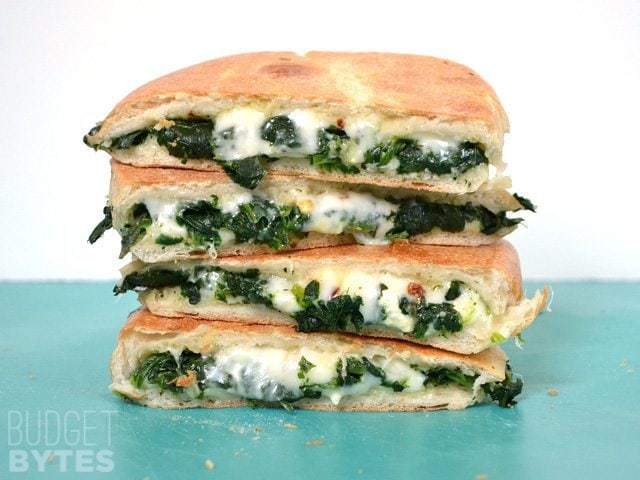

Spinach Feta Grilled Cheese |
|||||||||
| 2 servings | Total time: 30 minutes | Vegetarian | |||||||
| Home | |||||||||
Ingredients: 1/2 Tbsp olive oil 1 clove garlic 1/4 lb frozen cut spinach Pinch of salt and pepper 2 ciabatta rolls 1 cup shredded mozzarella cheese 28g feta cheese Pinch red pepper flakes (optional) |
Step by step instructions Mince the garlic and add it to a skillet with the olive oil. Cook over medium-low heat for 1-2 minutes. Add the frozen spinach, turn the heat up to medium, and cook for about 5 minutes. Season lightly with salt and pepper. Cut the rolls in half. Add about 1/4 cup of shredded mozzarella and 14g. of feta to the bottom half of each roll. Divide the cooked spinach between the two sandwiches, then top with a pinch of red pepper flakes, plus 1/4 more shredded mozzarella on each. Place the top half of the ciabatta roll on the sandwiches and transfer them to the grill. Turn the heat on to medium-low and cook until the sandwiches are crispy on both sides. |
||||||||
| Breakfast | |||||||||
| Lunch |  | ||||||||
| Dinner | |||||||||
| Dessert | |||||||||
{kind=link}